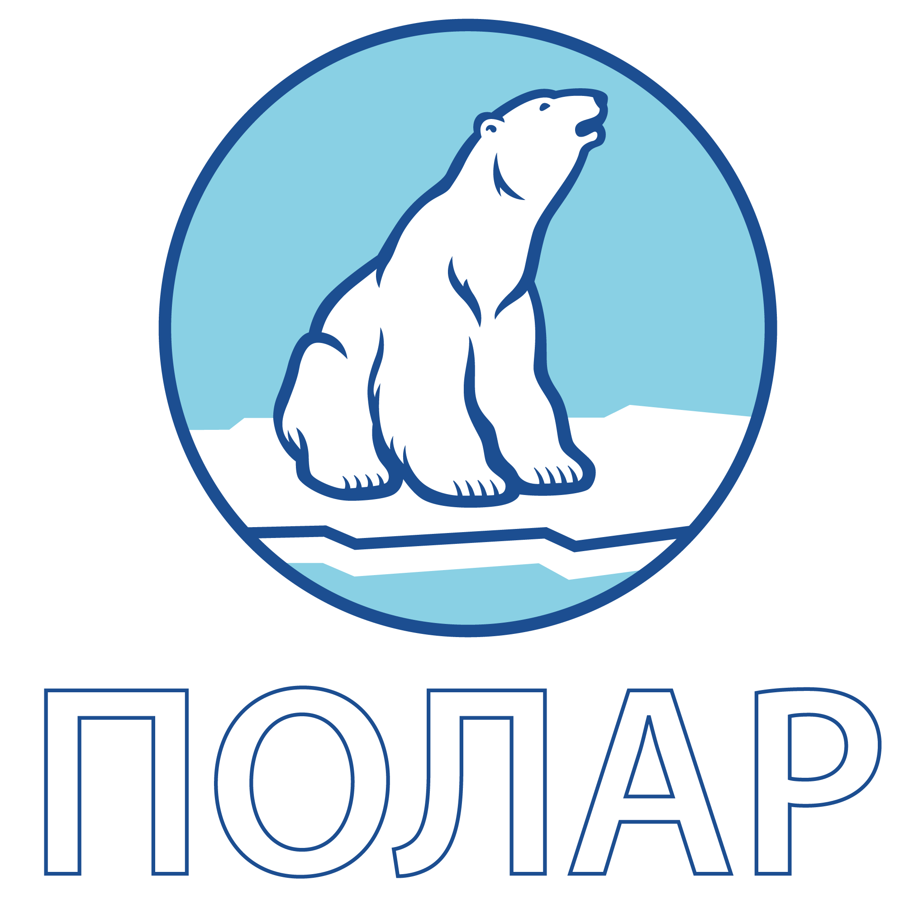
Аудит сайта и цифрового присутствия · октябрь 2026
Проверили 147 страниц polarseafood.ru, мобильную версию, скорость, формы, документы, карточки в Яндекс Картах, 2ГИС и Google, отзывы, соцсети и сайты конкурентов. По итогам сделали новый сайт, который закрывает найденные проблемы.
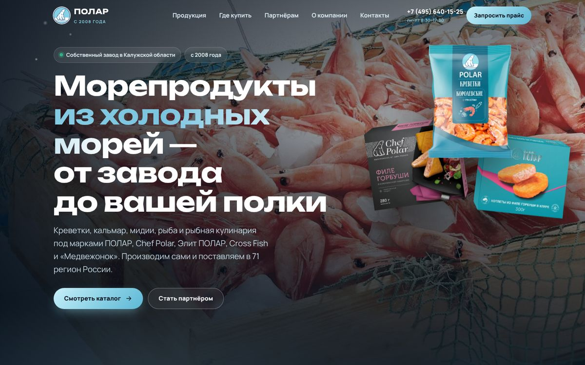
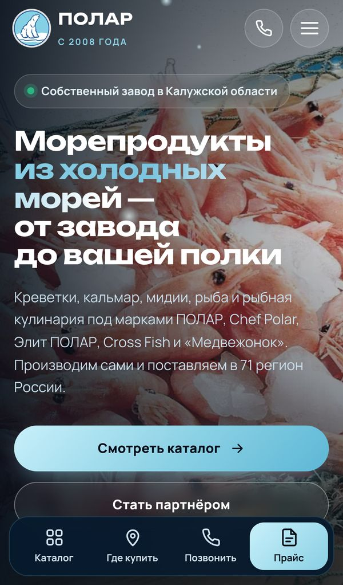
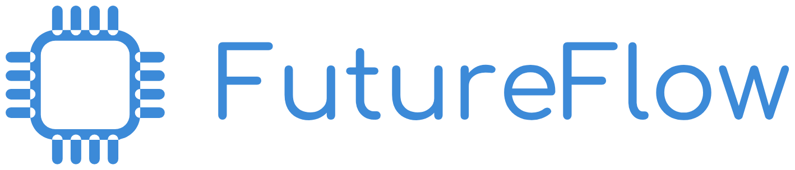
Раздел 1
У компании сильная база: собственный завод с 2013 года, около 850 контрагентов в 71 регионе, выручка 9,7 млрд ₽ за 2025 год (ГИР БО), пять марок и узнаваемый медведь. Сайт и карты эту силу почти не показывают и теряют обращения на каждом шаге.
| Направление | Оценка | Что видно сейчас |
|---|---|---|
| Мобильная версия | Критично | 7 страниц, включая весь каталог, показываются на телефоне как уменьшенный десктоп: текст 12 px выглядит как 3,7 px. |
| Каталог | Критично | Нет страниц товаров, поиска, состава, сроков хранения. 112 позиций — картинки внутри 8 разделов. |
| «Где купить» | Критично | Раздела нет. Сети упоминаются только в новостях, фирменный магазин при заводе — только в новости 2025 года. |
| Путь оптовика | Критично | Нет раздела для партнёров, условий и документов. Цифры «850 контрагентов, 71 регион» спрятаны на странице «О компании». |
| Формы и 152-ФЗ | Критично | Форма «Запросить прайс-лист» на всех 147 страницах собирает телефон без согласия; нет баннера cookie. |
| Документы о качестве | Критично | 3 из 4 ссылок: «Файл не найден» или вход в чужой Яндекс ID. |
| Скорость | Важно | Lighthouse на телефоне 49–55 из 100, главный экран — 10,9 с. Картинки — 360 МБ исходников, 152 файла тяжелее 1 МБ. |
| Поиск (SEO) | Важно | На главной нет H1, 38 страниц без описания, 1052 картинки без подписи, нет разметки для Яндекса и Google. |
| Карты | Критично | Склад в Яндексе «Больше не работает», производство не подтверждено и числится магазином 24/7; в Google дубль со старым адресом и рейтингом 1,0. |
| Репутация | Важно | На отзывы о производстве ответы есть меньше чем на половину; повторяются жалобы на глазурь и лёд. |
| Бренд и визуал | Сильная сторона | Узнаваемый медведь, качественные фото упаковок и завода, рецепты, публикации в МК и «Парламентской газете». |
147 страниц, 94 из них — новости; у 94 страниц меньше 100 слов своего текста.
4 карточки в Яндексе, 3 в 2ГИС, 3 в Google; подтверждены владельцем не больше 3 из 10.
Ни одной ссылки на сети и маркетплейсы; прайс выдаётся только через форму без согласия.
Раздел 2
С телефона приходит большая часть покупателей и многие закупщики. На ключевых страницах сайт для них не читается без увеличения.
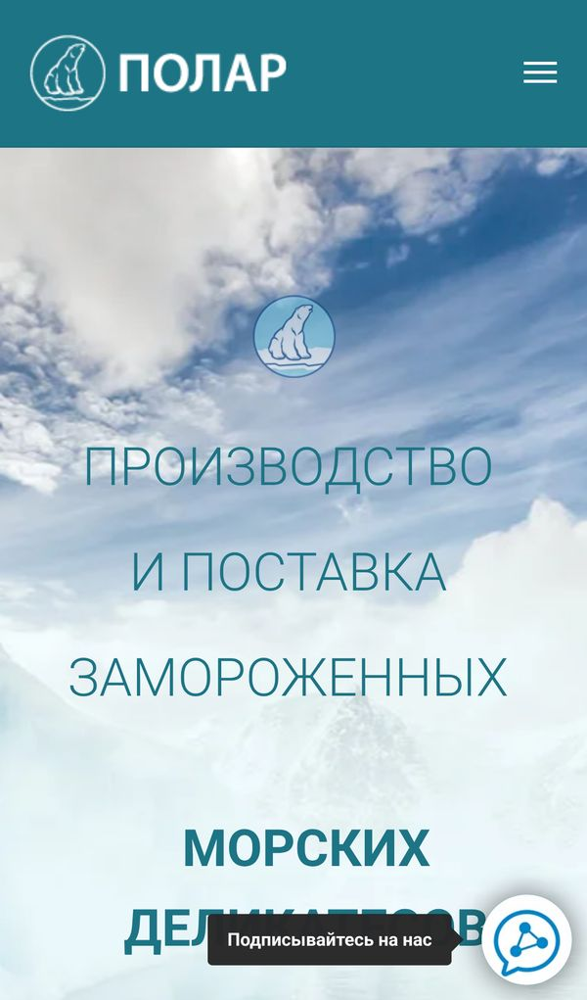
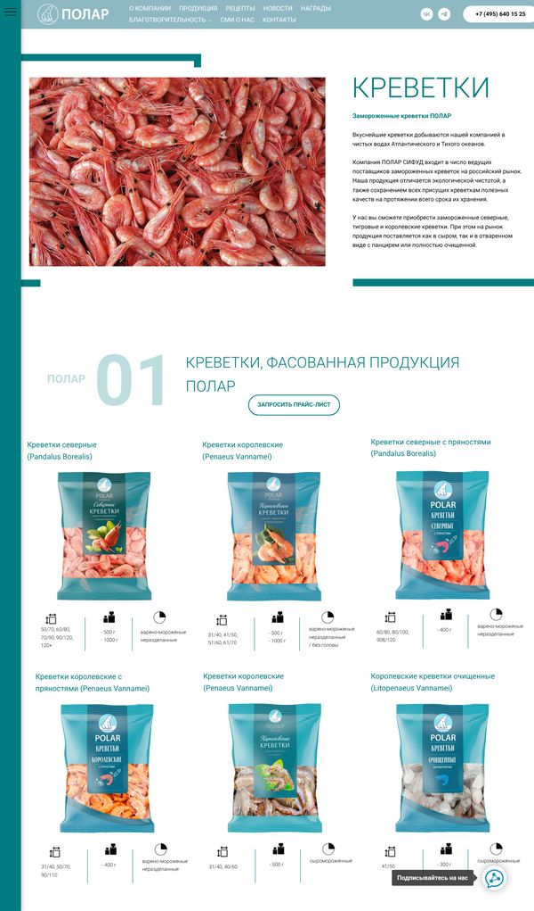
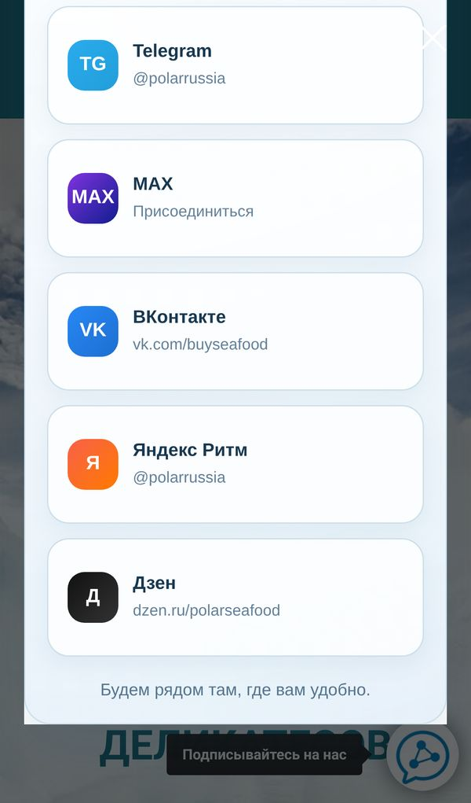
| Что не так | Где | Оценка |
|---|---|---|
| Фиксированная ширина 1280 px вместо адаптивной вёрстки | /o-kompanii, /krevetki, /morskie-delikatesy, /ryba-file-i-stejki, /kulinarnye-polufabrikaty, /cross-fish, /novosti | Критично |
| Подписка навязывается четырежды: плавающая кнопка, автопопап, иконки в шапке, меню; две разные ссылки на Telegram | все страницы | Важно |
| 31 элемент меньше 44 px для пальца: бургер 22×14 px, точки слайдера 8×8, «Читать еще» 76×16 | главная | Важно |
| На страницах брендов два бургер-меню одно под другим | /chef_polar, /elit-polar, /medvegonok | Важно |
| Телефоны склада и производства — простой текст, позвонить в одно касание нельзя | главная, подвал | Важно |
| Новости на телефоне идут вперемешку: 07.05 → 04.08 → 18.03 → 28.08.2026 | главная | Улучшение |
Раздел 3
У сайта две аудитории с разными задачами. Сейчас обе проходят один и тот же путь и на каждом шаге упираются в тупик.
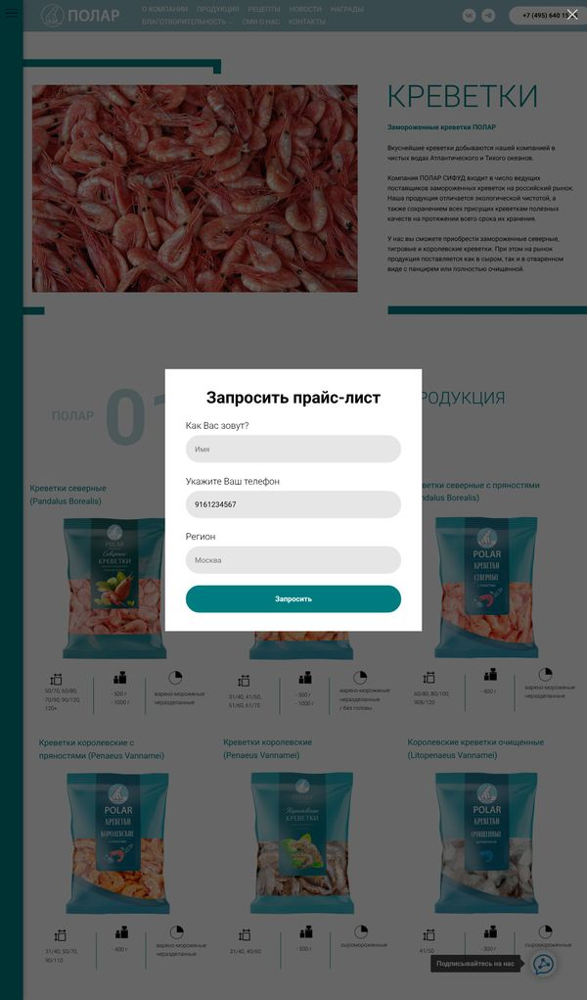
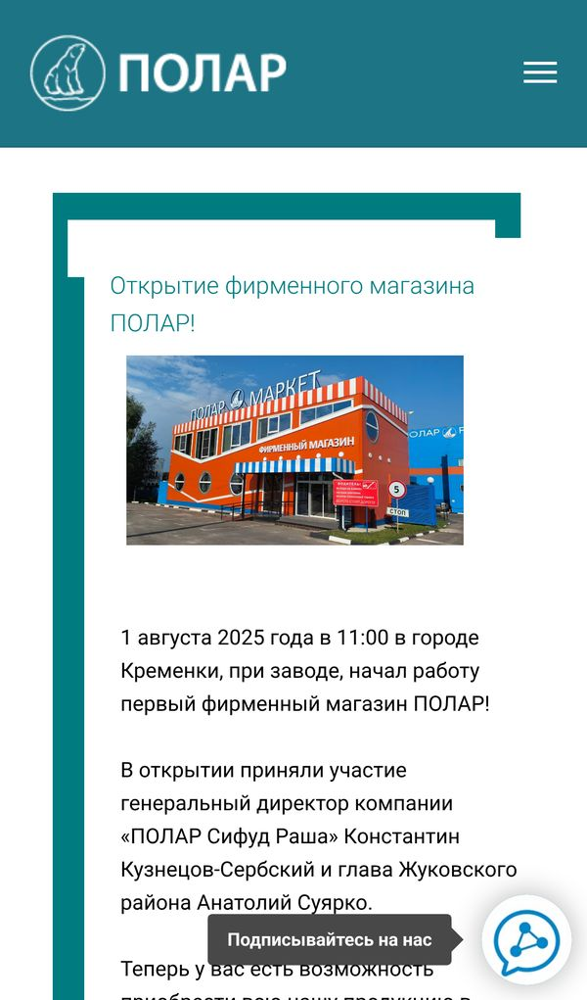
Раздел 4
Сервер отвечает быстро (0,25–0,39 с), но страницы перегружены картинками и скриптами. На телефоне главный экран появляется через 10–12 секунд.
| Страница | Телефон, из 100 | Главный экран, тел. | Десктоп, из 100 | Главный экран, дескт. |
|---|---|---|---|---|
| Главная | 51 | 10,9 с | 64–70 | 3,1–3,8 с |
| Креветки, О компании, Новости, Полуфабрикаты, Рецепты | 49–55 | 10,0–11,8 с | 64–70 | 3,1–3,8 с |
Lighthouse 12.8: телефон — медленный 4G и процессор в 4 раза слабее, это реалистичный худший случай. Норма Google для главного экрана — до 2,5 с.
| Что не так | Чем мешает | Оценка |
|---|---|---|
| Лента /novosti: 94 карточки на одной странице, высота 70 534 px, GIF по 2,3 и 1,7 МБ | Страница «съедает» мобильный трафик и долго открывается | Важно |
| На главной 32 скрипта (1,31 МБ); Яндекс.Карта грузится сразу, а не по клику | Медленный первый экран | Важно |
| Работает старый Google Analytics UA-166790854-1 — Google отключил его в 2023 году | Лишний код и передача данных за рубеж | Улучшение |
| Видео VK на /magazin-polar задерживает загрузку до 9–18 с | Страница магазина открывается дольше всех | Важно |
Нет lang="ru" ни на одной из 147 страниц; нет заголовков безопасности (ограничение Tilda) | Хуже для поиска и экранных дикторов | Улучшение |
| Битые ссылки: /nnovost-oir-niderlandi, href="null", 8 внешних с ошибкой 404/400 | Посетитель попадает на ошибку | Важно |
Раздел 5
Сайт находят в основном по названию компании. Запросы о товарах («креветки королевские 41/50 оптом», «филе минтая от производителя») забирают маркетплейсы и дистрибьюторы: у товаров ПОЛАР нет своих страниц.
| Что не так | Пример | Оценка |
|---|---|---|
| Заголовок главной без ключевых слов | «Полар Сифуд Раша - официальный сайт компании» | Критично |
| 51 заголовок вида «Новость про …» | «Новость про Азербайждан» (с опечаткой), «Copy of …» на /new-year-2023 | Важно |
| Чужие описания | Текст про фасоль на /novost-teploxod и /reportag; описание «Семейного дня с HAVAL» на новогодней странице | Важно |
| Нет разметки schema.org | Organization, Product, Recipe, BreadcrumbList — 0 страниц | Важно |
| Тонкие страницы | 94 из 147 страниц — меньше 100 слов; /nagrady — 11 слов; бренды — 113–152 слова | Важно |
| Мусор в карте сайта | «Blank page» /page15651443.html, приглашение на собеседование, 6 страниц-сирот; у всех 147 адресов одна дата | Улучшение |
Около 66 из 94 новостей — 2020–2023 годов: розыгрыш 2020 года (11 страниц), «скидка на ЕВРО-2021», вакансии 2021 года по 33–50 тыс. ₽, «Остаётся ли Polar в России?» (2022). Под адресом /prodexpo2015 — анонс 2025 года. Новости на главной — грамоты и поздравления, ни одной о продукции.
«908/120» вместо 90/120 (креветки), «медальоны их лососевого», «с добавление рыб», «Мясо мидий замороженный», «FOODSERVISE», «С 27 по 20 сентября», латинская «c» в «cоответствуют», «мирного небе», «Телефон / факс: 7 (495)» без «+». Абзац о компании на /o-kompanii повторён дважды.
Раздел 6
Закупщик сети проверяет поставщика по сайту. Сейчас при проверке он видит ошибки, а часть сведений создаёт риски по закону о персональных данных и закону о рекламе.
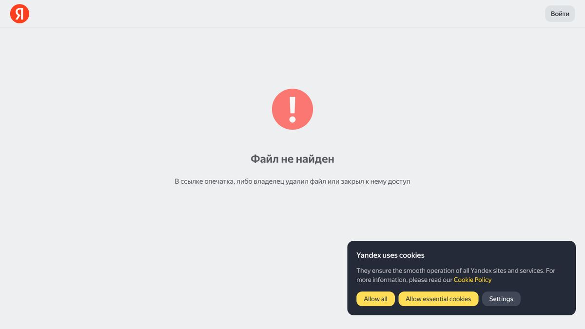
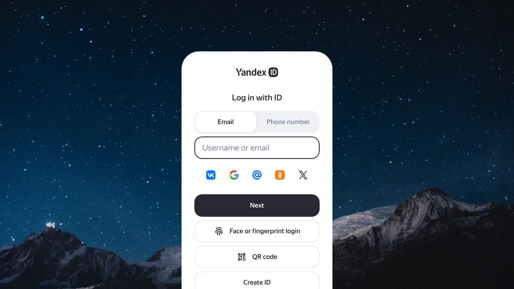
| Что не так | Риск | Оценка |
|---|---|---|
| Форма «Запросить прайс-лист» на всех 147 страницах: имя и телефон без согласия на обработку ПДн | 152-ФЗ, штраф Роскомнадзора | Критично |
| Нет уведомления о cookie при работающем Вебвизоре, Google Analytics и Google Fonts | 152-ФЗ, передача данных за рубеж | Важно |
| Политика ПДн — PDF на Яндекс.Диске (05.2024), не на сайте; 7 других ссылок сайта на Диск уже не работают | Ссылка может пропасть в любой момент | Важно |
| Около 40 ссылок на личные страницы победителей розыгрыша 2020 года; правила со списком документов (паспорт, ИНН, СНИЛС) | Персональные данные третьих лиц | Важно |
| «1-е место по качеству и безопасности» и «проверены Роскачеством» ведут на тест Росконтроля — организации перепутаны | Закон о рекламе, доверие | Критично |
| «ПД-ОВОС» на главной — 404; /sklad — уведомление об экологической экспертизе 2023 года вместо страницы склада | Ошибки при проверке поставщика | Важно |
Выводы по 152-ФЗ и закону о рекламе — оценка рисков, не юридическое заключение; формулировки согласий стоит согласовать с юристом компании.
Раздел 7
Компания есть на всех трёх картах, но подтверждены владельцем не больше 3 карточек из 10. Самая популярная карточка — производство (525 оценок) — оформлена как магазин 24/7 с московским телефоном.
| Карточка Яндекса | Статус | Рейтинг | Оценок / отзывов | Ответы на отзывы | Что не так |
|---|---|---|---|---|---|
| Офис, Варшавское ш., 42 | подтверждена | 4,3 | 101 / 54 | 35 из 49 | В соцсетях карточки только VK |
| Производство, Кремёнки | не подтверждена | 4,6 | 525 / 148 | 18 из 49 | Рубрика «магазин», 24/7, телефон московский; местного (48432) 236-90 нет |
| Склад, Булатниковская, 14 | «Больше не работает» | 4,2 | 17 / 4 | 0 из 4 | Название «Полар», без телефона; номер с сайта 385-66-46 в Яндексе не находится |
| Cross Fish, Варшавское ш., 42 | подтверждена | — | 0 | — | Ведёт на crossfish.ru, а не на сайт ПОЛАР |
Все три адреса на месте: офис 4,9 (25 оценок), склад 5,0 (9), производство 4,9 (12). Ни одна карточка не подтверждена: 2ГИС показывает «давно не обновляла данные». У производства московский телефон.
Офис — 3,7, открытие в 9:00 (в Яндексе 8:30). Кремёнки — 4,0, карточка не заявлена. Дубль «Полар Сифуд Раша», Неглинная, 8/10 — рейтинг 1,0, не заявлен. Склада в Google нет.
Источник: открытые данные карточек Яндекс Карт, 2ГИС и Google на 11.10.2026. Ссылки на карточки — в приложении к отчёту по запросу.
Раздел 8
Покупатели хвалят продукт и магазин при заводе, а повторяющиеся жалобы касаются одной темы — глазури и веса нетто. Ответ на неё может стать преимуществом, если рассказать о ней открыто.
Креветки «с икрой», «без льда», магазин при заводе, быструю доставку опта.
Лёд и глазурь в креветках 70/90 («180 г льда на 500 г»), «каша» в тресковых треугольниках, горечь филе камбалы, посторонние включения. Много однотипных пятёрок «брал в Ленте/Ашане» — такие Яндекс может отфильтровать.
| Канал | Подписчики | Активность | Что улучшить |
|---|---|---|---|
| Telegram @polarrussia | 740 | ~3 поста в неделю, 52–362 просмотра | Связать посты с местами продаж и акциями |
| ВКонтакте vk.com/buyseafood | 1 174 | 0–2 реакции на пост, комментарии закрыты | Открыть комментарии, розыгрыши, посевы |
| Дзен, Яндекс Ритм, MAX | — | Каналы есть; число подписчиков проверить не удалось (нужен вход) | |
| Компания | Чем сайт сильнее | Есть у ПОЛАР в новом сайте |
|---|---|---|
| VICI | Карточка на каждый товар, фильтр, рецепты | да карточки, фильтр, поиск |
| ЮНИФРОСТ (AGAMA, «Меридиан») | B2B-каталог, «География закупок», документы, «Запросить прайс» | да раздел «Партнёрам» |
| «Меридиан» | Каталог с карточками, книга рецептов, пресс-центр | да рецепты, СМИ |
| Норебо | Цифры производства, сертификат FSSC, склад −25 °C | проверим нужны данные завода |
Раздел 9
Мы сделали новый сайт на реальных материалах компании: фото завода и упаковок, логотипы, тексты, 112 позиций каталога — у каждой своя страница. Атмосферные кадры для разделов «Сети» и «HoReCa» созданы нейросетью Higgsfield — без логотипов и чужой продукции.
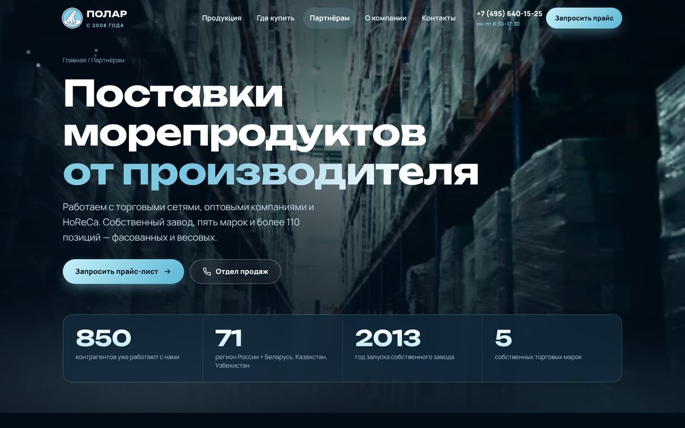
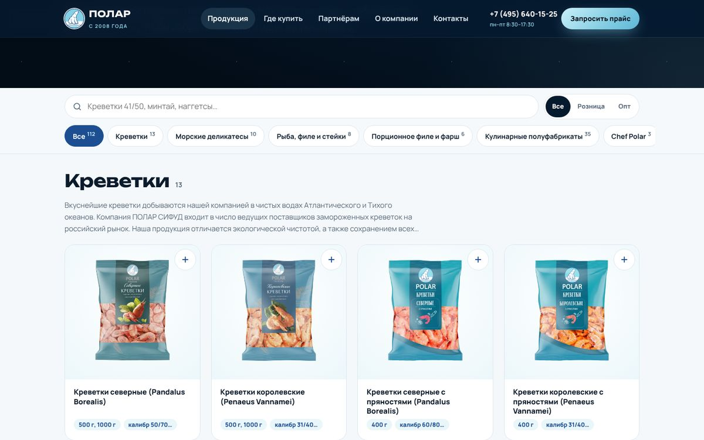
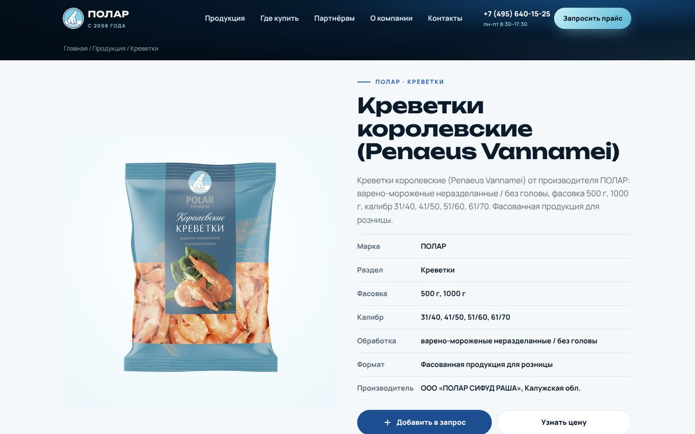
Каталог с карточками, запрос прайса по выбранным позициям, «Где купить» с маршрутом к магазину.
Завод, цифры, знак качества, СМИ, история компании — на виду, а не в глубине сайта.
Тёмно-синяя «арктическая» стилистика, падающие снежинки, анимация цифр и путь продукта.
Раздел 9
Сайт сделан от телефона: крупный текст, кнопки не меньше 44 px, нижняя панель действий, карточка товара открывается снизу, как в приложении. Посмотреть: adriaaante.github.io/polarseafood.ru
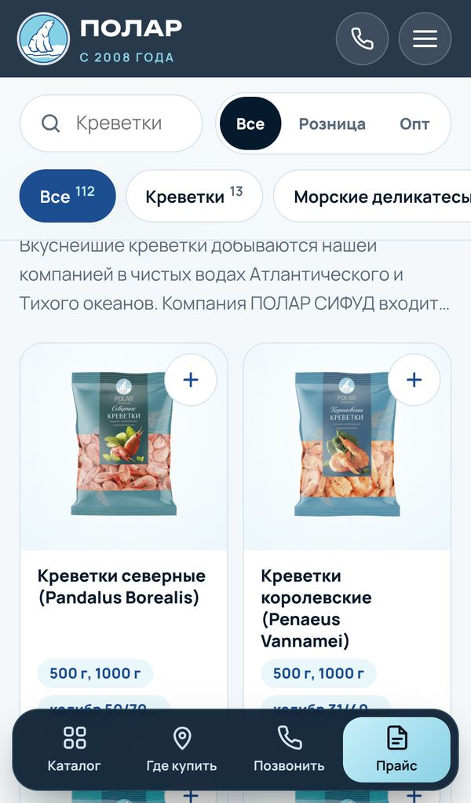
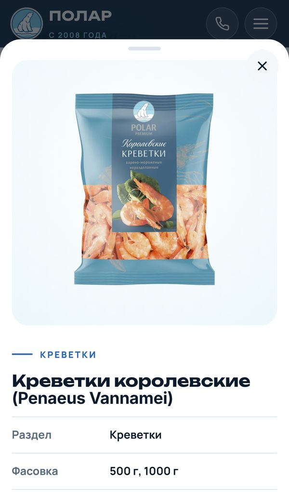
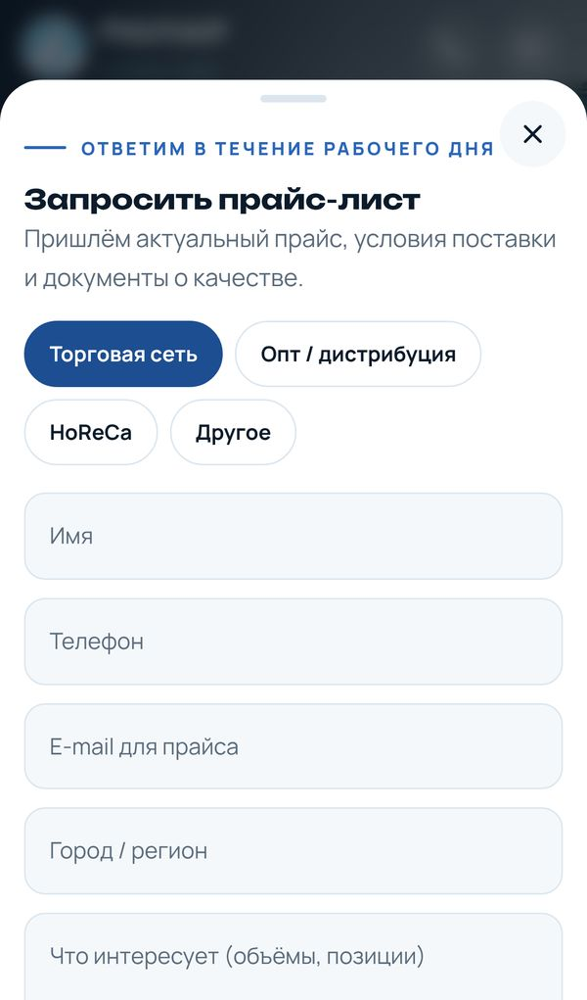
| Показатель | Сейчас | Новый сайт |
|---|---|---|
| Lighthouse, телефон (из 100) | 49–55 | 84–93 |
| Lighthouse, десктоп (из 100) | 64–70 | 98–100 |
| Главный экран на телефоне | 10,9 с | 3,4 с |
| Вес главной на телефоне | 1,59 МБ | 0,49 МБ |
| Страниц товаров в поиске | 0 | 112 |
| SEO / Best Practices (Lighthouse) | 92–100 / 75–78 | 100 / 100 |
| Страниц без мобильной версии | 7 | 0 |
Сайт не зависит от Tilda: чистый код, размещается на любом хостинге компании.
Позиции, фасовки и фото обновляются в одном месте — меняются на всех страницах сразу.
Почта, CRM или Telegram отдела продаж: подключаем при запуске.
Новый сайт замерен локально с теми же настройками Lighthouse 12.8; на хостинге с CDN и сжатием результат будет таким же или лучше.
Раздел 10
Каждая проблема аудита и то, как её решает новый сайт.
| Было | Стало в новом сайте |
|---|---|
| Каталог на телефоне нечитаем (ширина 1280 px) | Вся вёрстка от телефона, 0 горизонтальной прокрутки на всех страницах |
| Нет страниц товаров, поиска и фильтров | 112 страниц товаров с разметкой для поиска, поиск по названию и калибру, фильтры по разделам и «Розница / Опт» |
| Нет «Где купить», магазин спрятан в новостях | Раздел «Где купить»: фирменный магазин, часы, маршрут, карта по клику, сети, форма «подскажем в вашем городе» |
| Нет раздела для оптовиков | «Партнёрам»: Сети · Опт · HoReCa, шаги до поставки, производство, документы по запросу |
| Форма прайса без согласия, пустые заявки | Обязательные имя и телефон, маска +7, e-mail, тип клиента, согласие, сообщение о сроке ответа |
| Запрос прайса «вообще», без позиций | Кнопка «+» на карточке собирает позиции в один запрос — менеджер видит, что нужно клиенту |
| Подписка навязывается 4 раза, автопопап | Один блок соцсетей, без всплывающих окон |
| Телефоны склада и завода не кликабельны | Все телефоны и почта — в одно касание; нижняя панель «Позвонить» на телефоне |
| Документы о качестве: 3 из 4 не открываются | Документы высылаются вместе с прайсом; битых ссылок нет |
| Новости вперемешку, на главной — грамоты | Новости по дате, на главной — жизнь компании без поздравлений |
| Нет H1, разметки, подписей фото; 38 страниц без описания | H1 и уникальное описание на всех 118 страницах, разметка Organization, Product, «хлебные крошки», sitemap.xml |
| Меню: «Благотворительность» наравне с «Продукцией» | Меню: Продукция · Где купить · Партнёрам · О компании · Контакты; награды, СМИ и помощь — в «О компании» |
| Опечатки («908/120», «медальоны их…») | Исправлены в каталоге |
| Главный экран на телефоне 10,9 с | 3,4 с; картинки WebP, карта и видео — по клику |
Раздел 11
Новый сайт — основа. На нём строятся каналы, которые сейчас не работают или работают вполсилы.
| # | Точка роста | Что делаем | Что даёт бизнесу |
|---|---|---|---|
| 1 | Поиск по товарам | Страницы под запросы «креветки королевские оптом», «филе минтая от производителя», тексты разделов и брендов | Заявки от тех, кто ищет товар, а не название компании |
| 2 | Карты: 4 точки × 3 сервиса | Подтверждение, телефоны, часы, фото, витрина «Товары», ответы на все отзывы | Звонки и маршруты к магазину; снятие «закрыт» со склада |
| 3 | Поиск новых контрагентов | База сетей, дистрибьюторов и HoReCa по регионам; рассылки и звонки с прайсом и каталогом | Новые точки продаж в регионах, где ПОЛАР пока нет |
| 4 | Реклама под сегменты | Яндекс Директ и ВКонтакте отдельно на закупщиков и на покупателей «где купить» | Измеримый поток заявок |
| 5 | Маркетплейсы | Официальные витрины бренда на Ozon, Wildberries, Яндекс Маркете; кнопка «Купить онлайн» | Продажи там, где покупатель уже ищет |
| 6 | Открыто о глазури | Страница «Глазурь и вес нетто», ответы на отзывы, QR на упаковке — отзыв в Яндексе | Повторяющаяся жалоба становится аргументом доверия |
| 7 | Видео завода | Съёмка производства и магазина, ролики для сайта, карт и соцсетей | Сильнейший аргумент для сетей и покупателей |
| 8 | Аналитика и CRM | Цели Метрики на формы и звонки, заявки сразу в CRM, учёт источника каждой сделки | Видно, какой канал приносит деньги |
850 контрагентов · 71 регион + Беларусь, Казахстан, Узбекистан · сырьё из 13 стран · завод с 2013 года · склад на 7 500 паллетомест (МК, 05.05.2026) · план нового автоматизированного комплекса к маю 2027 года.
Детская линейка «Медвежонок» — отдельная история для родителей; Chef Polar — лицо шеф-повара; рецепты, связанные с товарами; посты о жизни завода вместо одних поздравлений.
Раздел 12
Новый сайт уже готов, его запуск входит в первый месяц. Дальше берём на себя всё цифровое продвижение ПОЛАР: от сайта и карт до поиска новых контрагентов. Вместо нескольких подрядчиков — одна команда, которая знает бизнес изнутри и всегда на связи.
Рекламный бюджет площадок (Яндекс Директ, ВКонтакте) оплачивается отдельно, напрямую площадкам.
Когда компании понадобится новая разработка, она идёт к нам вне очереди и по отдельной смете:
Чтобы запустить сайт и навести порядок в картах в первый месяц, понадобится немного.
Тестовая версия открыта для просмотра с телефона и компьютера:
adriaaante.github.io/polarseafood.ru
Сайт работает без Tilda и подписок: его можно разместить на любом хостинге компании.